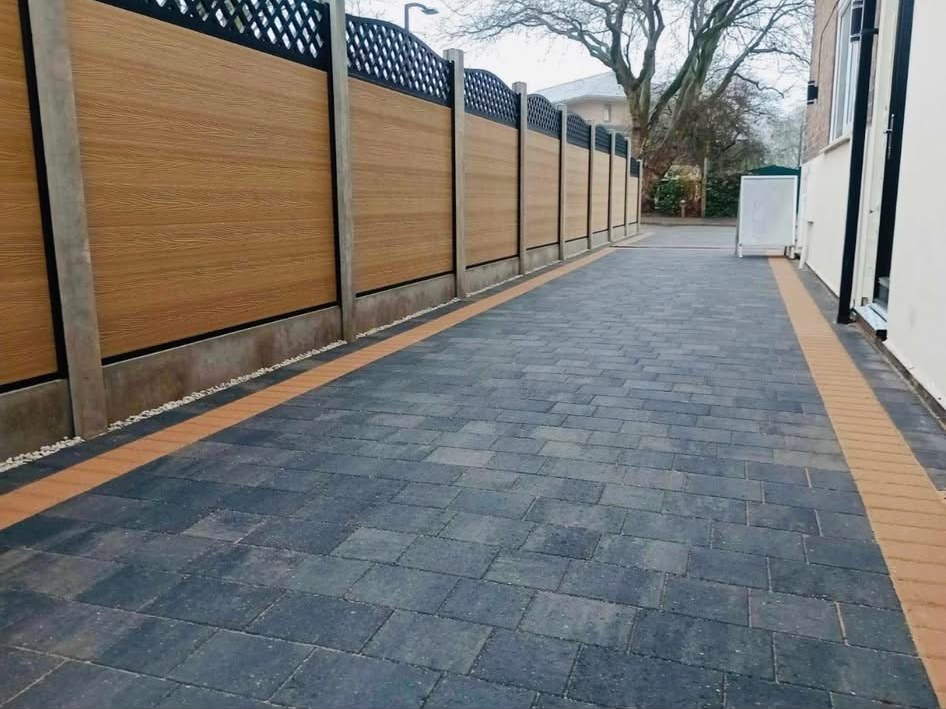
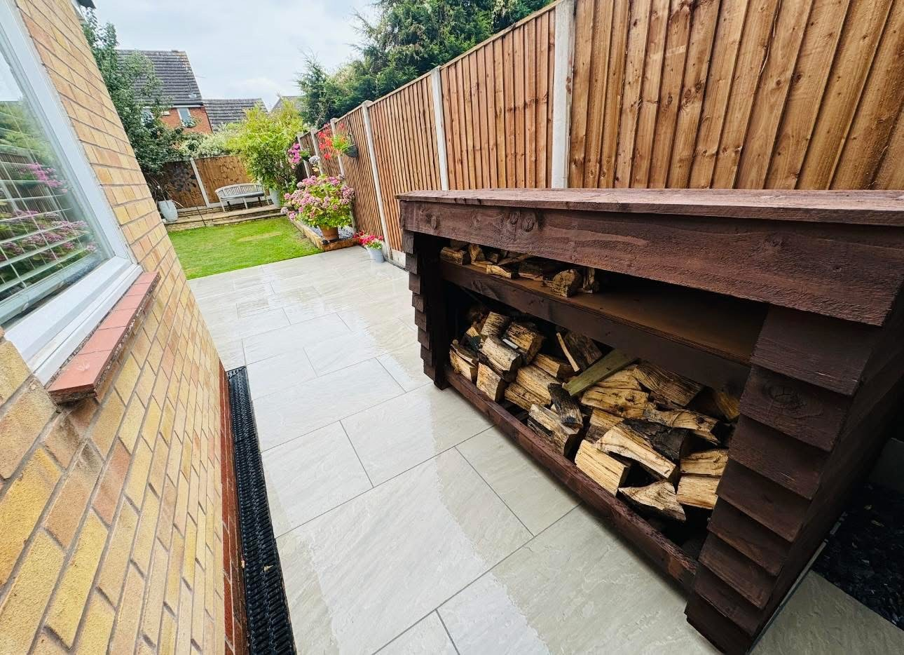
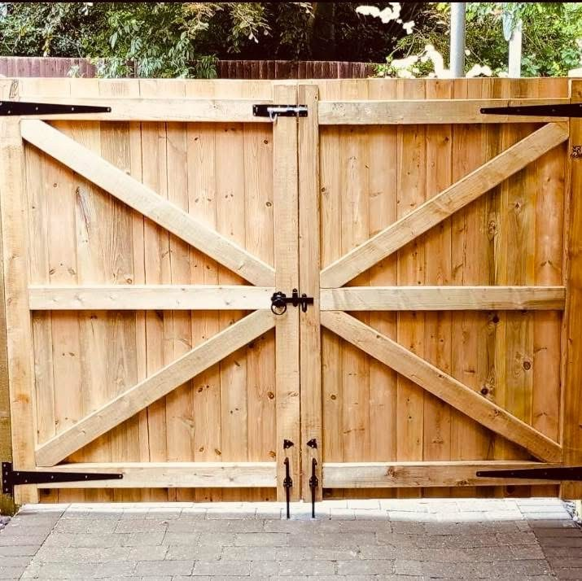

TOLLERTON · NOTTINGHAM
Better gardens.
Built around you.
Fencing, landscaping and timber details for outdoor spaces. Materials supplied for collection or delivery, with installation available by arrangement.
CollectionDeliveryInstallation
YOUR OUTDOOR SPACE, REIMAGINED
Practical details.
A lasting difference.
A new fence, a welcoming gate or a patio that makes better use of the garden. The right materials and thoughtful installation can change how your outdoor space feels.
Based in Tollerton, JBM Nottingham Ltd supplies landscaping and fencing materials, with collection, delivery and installation available by arrangement. Explore the real project photographs and tell us what you are planning.
Start with your ideas →

A CLOSER LOOK AT THE DETAILS
Timber character.
Everyday practicality.
From garden access to keeping logs and bins neatly stored, timber features can make a space work harder while fitting naturally into the garden.
Tap a photograph to see the full image, then send your measurements to discuss a similar project.
Explore gates & timber storage →WHAT WE DO
Better boundaries.
Outdoor possibilities.
Choose a service to explore the details.
Fencing
Timber fencing, panels and garden boundaries supplied and installed around Tollerton and Nottingham.
Explore this service →Gates & timber storage
Garden gates, double gates, bin stores and log stores for practical outdoor spaces.
Explore this service →Paving & landscaping
Patios, paved paths, sleeper borders and outdoor landscaping enquiries in Nottingham.
Explore this service →Materials supply
Landscaping and fencing materials available for collection or delivery, with installation enquiries welcome.
Explore this service →OUR WORK
Real gardens.
Real transformations.
Fencing, gates, paving and timber details from JBM’s supplied project photographs. Tap to view the complete image.
TOLLERTON & NOTTINGHAM
Local materials.
Outdoor projects.
Contact JBM Nottingham Ltd with your postcode to check collection arrangements, delivery and installation availability.
Discuss your location →LET’S TALK ABOUT YOUR PROJECT
A better boundary.
A better outdoor space.
Tell us what you need, your postcode and approximate measurements. For materials, include quantities and whether you need collection, delivery or installation.
JBM NOTTINGHAM LTD · TOLLERTON
Let’s bring your
outdoor plans to life.
Materials, delivery and installation enquiries welcome.